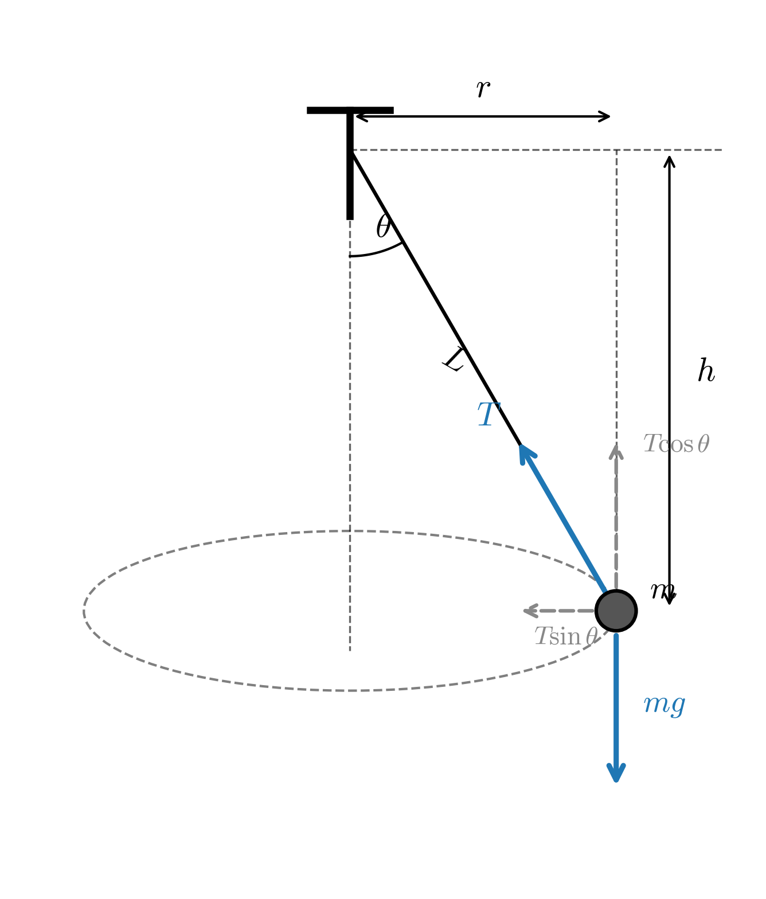
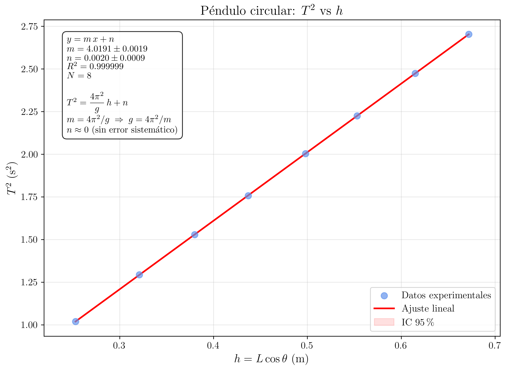

Laboratorio de Mecánica — UNED
2026-03-20
Estudio del movimiento circular uniforme de un péndulo cónico. Verificación experimental de la relación T^2 = 4\pi^2 h/g y determinación de la aceleración de la gravedad. Comprobación de la independencia del periodo respecto a la masa.
En esta experiencia se investiga la relación existente entre el periodo de revolución de un péndulo circular (péndulo cónico) y la altura del punto de suspensión respecto al plano de la órbita circular. A partir de estos datos se calcula el valor de la aceleración de la gravedad, g. Además, se comprueba experimentalmente que el periodo de revolución es independiente de la masa del cuerpo suspendido.
Un péndulo circular (también denominado péndulo cónico) consiste en una masa puntual, m, suspendida de un hilo inextensible de longitud L, que describe una trayectoria circular en un plano horizontal. El hilo describe, de esta forma, la superficie lateral de un cono cuyo vértice coincide con el punto de suspensión.
Sobre la masa actúan dos fuerzas: su peso, mg, dirigido verticalmente hacia abajo, y la tensión del hilo, T, dirigida a lo largo del hilo hacia el punto de suspensión. Si \theta es el ángulo que forma el hilo con la vertical, las ecuaciones del movimiento en la dirección vertical y radial (horizontal) son, respectivamente:
T \cos\theta = mg \tag{1}
T \sin\theta = m\,\omega^{2}\,r \tag{2}
En esas ecuaciones, \omega es la velocidad angular de la masa y r es el radio de la trayectoria circular.

Dividiendo la ecuación Ecuación 2 entre la ecuación Ecuación 1 se elimina la tensión T:
\frac{\sin\theta}{\cos\theta} = \frac{\omega^{2}\,r}{g} \Rightarrow \tan\theta = \frac{\omega^{2}\,r}{g} \tag{3}
Teniendo en cuenta que el radio de la trayectoria circular se relaciona con la longitud del hilo y el ángulo mediante r = L\sin\theta, y que la velocidad angular se relaciona con el periodo mediante \omega = \dfrac{2\pi}{T}, se puede sustituir en la ecuación Ecuación 3:
\tan\theta = \frac{4\pi^{2}}{T^{2}\,g}\,L\sin\theta
Dado que \tan\theta = \dfrac{\sin\theta}{\cos\theta}, se simplifica \sin\theta de ambos lados, obteniéndose:
\frac{1}{\cos\theta} = \frac{4\pi^{2}\,L}{T^{2}\,g}
Despejando T^{2}:
\boxed{T^{2} = \frac{4\pi^{2}\,L\cos\theta}{g} = \frac{4\pi^{2}\,h}{g}} \tag{4}
donde se ha definido la altura del cono, h, como:
h = L\cos\theta \tag{5}
Independencia de la masa
La ecuación Ecuación 4 muestra un resultado notable: el periodo del péndulo circular es independiente de la masa del cuerpo suspendido. El periodo depende únicamente de la altura h (distancia vertical entre el punto de suspensión y el plano de la órbita) y de la aceleración de la gravedad g.
Esto se puede entender físicamente: tanto la fuerza gravitatoria como la fuerza centrípeta necesaria son proporcionales a m, por lo que la masa se cancela al establecer el equilibrio dinámico.
La ecuación Ecuación 4 establece una relación lineal entre T^{2} y h:
\boxed{T^{2} = \frac{4\pi^{2}}{g}\,h} \tag{6}
Si se representa gráficamente T^{2} frente a h, se debe obtener una línea recta que pasa por el origen con pendiente:
\boxed{p = \frac{4\pi^{2}}{g}} \tag{7}
De esta manera, a partir de la pendiente p obtenida mediante un ajuste por mínimos cuadrados (regresión lineal), se puede determinar el valor experimental de la aceleración de la gravedad:
\boxed{g = \frac{4\pi^{2}}{p}} \tag{8}
Caso límite: \theta \to 0
Cuando el ángulo \theta tiende a cero, \cos\theta \to 1 y por tanto h \to L. En ese caso, la expresión del periodo se reduce a:
T = 2\pi\,\sqrt{\frac{L}{g}}
que es precisamente la expresión del periodo de un péndulo simple para pequeñas oscilaciones. Esto tiene sentido físico: cuando el ángulo de apertura del cono es muy pequeño, el movimiento circular se confunde con las oscilaciones de un péndulo simple.
El dispositivo experimental consiste en una bola suspendida de un hilo inextensible cuyo extremo superior se fija a una barra horizontal sujeta a un soporte vertical. Se hace girar la bola de modo que describa una trayectoria circular en un plano horizontal. El hilo describe así la superficie lateral de un cono.
Se mide la longitud del hilo, L, desde el punto de sujeción hasta el centro de la bola, y el radio de la trayectoria circular, r, desde el eje vertical hasta el centro de la bola. A partir de estos valores se calcula la altura h = \sqrt{L^{2} - r^{2}}.
1
Medir con la regla la longitud del hilo, L, desde el punto de sujeción hasta el centro de la bola. Anotar el valor con su correspondiente error (precisión del instrumento).
Realizar la primera medida con L = 0.80 m.
2
Hacer girar la bola con suavidad de forma que describa una trayectoria circular lo más uniforme posible en un plano horizontal. Es importante que:
- El movimiento sea lo más circular posible (evitar oscilaciones elípticas).
- La velocidad de giro sea razonablemente constante durante la medida.
- El punto de sujeción superior permanezca inmóvil.
3
Una vez que el movimiento circular sea estable, medir el radio de la trayectoria, r. Para ello, se puede colocar una regla en el plano horizontal de la trayectoria y observar el diámetro del círculo descrito por la bola, dividiendo entre dos.
Nota: La medida de r es la más difícil de esta práctica. Se recomienda que un compañero observe desde arriba mientras otro mide.
4
Medir con el cronómetro el tiempo que tarda la bola en completar 10 revoluciones completas. Repetir esta medida 5 veces para cada longitud de hilo.
Nota: Es más preciso medir 10 periodos que uno solo, ya que se reduce el error relativo asociado al tiempo de reacción del experimentador.
5
Calcular la altura del cono para cada longitud de hilo:
h = \sqrt{L^{2} - r^{2}} \tag{9}
Alternativamente, si la medida directa de r resulta difícil, se puede medir directamente h con una plomada o una regla vertical desde el punto de sujeción hasta el plano de la órbita.
6
Repetir los pasos 1 a 5 para al menos 7 longitudes de hilo diferentes, comprendidas entre L = 0.30 m y L = 0.80 m.
Completar una tabla como la que se indica a continuación.
Datos
experimentales
A continuación en la tabla se resumen los datos recogidos en el laboratorio.
Como se puede ver, por cada longitud de hilo se han tomado 5 medidas de 10 periodos. Lo primero que hay que hacer, por tanto, es calcular el valor medio de los 10 periodos para cada longitud y, posteriormente, obtener el valor del periodo.
| Medida | L \textrm{ (m)} | r \textrm{ (m)} | 10 T_{1} (\textrm{s}) | 10 T_{2} (\textrm{s}) | 10 T_{3} (\textrm{s}) | 10 T_{4} (\textrm{s}) | 10 T_{5} (\textrm{s}) |
|---|---|---|---|---|---|---|---|
| 1 | 0.30 | 0.13 | 10.43 | 10.43 | 10.43 | 10.45 | 10.43 |
| 2 | 0.35 | 0.15 | 11.24 | 11.29 | 11.27 | 11.27 | 11.28 |
| 3 | 0.40 | 0.17 | 12.08 | 12.11 | 12.09 | 12.07 | 12.05 |
| 4 | 0.45 | 0.19 | 12.78 | 12.82 | 12.85 | 12.81 | 12.81 |
| 5 | 0.50 | 0.22 | 13.46 | 13.40 | 13.43 | 13.46 | 13.47 |
| 6 | 0.60 | 0.26 | 14.74 | 14.76 | 14.76 | 14.78 | 14.72 |
| 7 | 0.70 | 0.30 | 15.97 | 15.91 | 15.88 | 15.94 | 15.93 |
| 8 | 0.80 | 0.35 | 17.04 | 17.03 | 16.98 | 17.04 | 16.98 |
7
Con los datos experimentales, construir una tabla de valores procesados que contenga, para cada medida: la longitud L, el radio r, la altura h, el valor medio de 10T, el periodo medio T, y el cuadrado del periodo T^{2}.
Datos
procesados
| Medida | L \textrm{ (m)} | r \textrm{ (m)} | h \textrm{ (m)} | \overline{10T} \textrm{ (s)} | T \textrm{ (s)} | T^{2} \textrm{ (s}^{2}\textrm{)} |
|---|---|---|---|---|---|---|
| 1 | 0.30 | 0.13 | 0.2704 | 10.434 | 1.0434 | 1.0887 |
| 2 | 0.35 | 0.15 | 0.3162 | 11.270 | 1.1270 | 1.2701 |
| 3 | 0.40 | 0.17 | 0.3621 | 12.080 | 1.2080 | 1.4593 |
| 4 | 0.45 | 0.19 | 0.4079 | 12.814 | 1.2814 | 1.6420 |
| 5 | 0.50 | 0.22 | 0.4490 | 13.444 | 1.3444 | 1.8074 |
| 6 | 0.60 | 0.26 | 0.5407 | 14.752 | 1.4752 | 2.1762 |
| 7 | 0.70 | 0.30 | 0.6325 | 15.926 | 1.5926 | 2.5364 |
| 8 | 0.80 | 0.35 | 0.7194 | 17.014 | 1.7014 | 2.8948 |
8
Representar gráficamente T^{2} en función de h.
La teoría predice una relación lineal entre ambas magnitudes según la fórmula Ecuación 6: \boxed{T^{2} = \frac{4\pi^{2}}{g}\,h} \tag{10}
Realizar el correspondiente ajuste por mínimos cuadrados, regresión lineal, para determinar el valor de g.
Calcular también el error \Delta g.

Comentarios y cálculos sobre la regresión lineal
Cuando se representa gráficamente el contenido de la ecuación Ecuación 10, para que se aprecie mejor qué (T^{2}) se representa frente a qué (h): T^{2} = \frac{4\pi^{2}}{g}\,h \Rightarrow T^{2} = \boxed{\frac{4\pi^{2}}{g}}\cdot h + \boxed{0}
La última expresión no es más que la ecuación de una línea recta que pasa por el origen, en la que
- la pendiente, p es: p=\dfrac{4\pi^{2}}{g}
- la ordenada en el origen, teóricamente, es 0.
Así, al ajustar la nube de puntos experimentales mediante una regresión lineal (y = p\cdot x + n, el problema matemático), se puede obtener el valor de g y su correspondiente error.
Resultados numéricos de la regresión lineal
Con los 8 puntos experimentales de la tabla de datos procesados (h_{i}, T_{i}^{2}), se aplican las fórmulas estándar de regresión lineal por mínimos cuadrados:
p = \dfrac{N\sum x_{i}y_{i} - \sum x_{i}\sum y_{i}}{N\sum x_{i}^{2} - \left(\sum x_{i}\right)^{2}} \qquad n = \dfrac{\sum x_{i}^{2}\sum y_{i} - \sum x_{i}\sum x_{i}y_{i}}{N\sum x_{i}^{2} - \left(\sum x_{i}\right)^{2}}
Con N = 8, \sum h_{i} = 3{,}6982, \sum T_{i}^{2} = 14{,}8749, \sum h_{i}^{2} = 1{,}8821, \sum h_{i}\,T_{i}^{2} = 7{,}5692, se obtiene:
\boxed{p = 4{,}0152 \textrm{ s}^{2}/\textrm{m}} \qquad \boxed{n = 0{,}0033 \textrm{ s}^{2}}
Los errores de la pendiente y la ordenada en el origen, a partir de la varianza residual s^{2} = \sum(y_{i} - p\,x_{i} - n)^{2}/(N-2), son:
\boxed{\Delta p = 0{,}0082 \textrm{ s}^{2}/\textrm{m}} \qquad \boxed{\Delta n = 0{,}0040 \textrm{ s}^{2}}
El coeficiente de determinación es R^{2} = 0{,}999975, lo que indica un ajuste lineal excelente.
Obtención de g a partir de la pendiente
De la comparación entre la ecuación física y la ecuación matemática: T^{2} = \dfrac{4\pi^{2}}{g}\cdot h \equiv y = p\cdot x + n
se deduce que p=\dfrac{4\pi^{2}}{g}, con lo que g es: \boxed{g = \dfrac{4\pi^{2}}{p}} \tag{11}
Numéricamente:
g = \dfrac{4\pi^{2}}{4{,}0152} = \dfrac{39{,}4784}{4{,}0152} = 9{,}832 \textrm{ m/s}^{2}
Error de g
Se puede trasladar el error de p, obtenido de la regresión lineal, \Delta p, teniendo en cuenta que en la expresión Ecuación 11 g es una función de una sola variable p. Eso significa que el error hay que calcularlo utilizando la siguiente expresión: \Delta g = \sqrt{ \left|\frac{\textrm{d} g}{\textrm{d} p}\right|^{2} \cdot \left|\Delta p\right|^{2} } \Rightarrow \Delta g = \left|\frac{\textrm{d} g}{\textrm{d} p}\right|\cdot \left|\Delta p\right| \Rightarrow \boxed{\Delta g = \left|\frac{4\pi^{2}}{p^{2}}\right|\cdot \left|\Delta p\right|} \tag{12}
Numéricamente:
\Delta g = \dfrac{4\pi^{2}}{(4{,}0152)^{2}} \times 0{,}0082 = \dfrac{39{,}4784}{16{,}122} \times 0{,}0082 = 2{,}449 \times 0{,}0082 = 0{,}020 \textrm{ m/s}^{2}
Finalmente, el valor de g que hay que entregar en el informe será: \boxed{g = \dfrac{4\pi^{2}}{p} \pm \left|\frac{4\pi^{2}}{p^{2}}\right|\cdot \left|\Delta p\right|}
\boxed{g \approx 9{,}832 \pm 0{,}020 \textrm{ m/s}^{2}}
Comparación con el valor teórico
El valor teórico aceptado es g_{\textrm{teórico}} = 9{,}81 m/s^{2}. La desviación porcentual es:
\varepsilon = \dfrac{|g_{\textrm{exp}} - g_{\textrm{teórico}}|}{g_{\textrm{teórico}}} \times 100 = \dfrac{|9{,}832 - 9{,}81|}{9{,}81} \times 100 = 0{,}22\,\text{\%}
La discrepancia es inferior al 1\,\text{\%}, lo que indica una excelente concordancia con el valor teórico. Además, el valor teórico g = 9{,}81 m/s^{2} cae dentro del intervalo g_{\textrm{exp}} \pm \Delta g = [9{,}812;\; 9{,}852], con lo que los resultados son compatibles dentro de la incertidumbre experimental.
Verificación de la ordenada en el origen
La teoría predice que la recta debe pasar por el origen (n = 0). El valor obtenido es:
n = 0{,}0033 \pm 0{,}0040 \textrm{ s}^{2}
Puesto que |n| = 0{,}0033 < 2\,\Delta n = 0{,}0080, la ordenada en el origen es compatible con cero dentro de 2\sigma, confirmando que no hay un error sistemático apreciable en la medida de h.
9
Comparar el valor de g obtenido experimentalmente con el valor teórico aceptado (g = 9.81 \textrm{ m/s}^{2}) y con el valor local para la ubicación del laboratorio, que se puede obtener aquí.
Calcular la desviación porcentual: \varepsilon = \frac{|g_{\textrm{exp}} - g_{\textrm{teórico}}|}{g_{\textrm{teórico}}} \times 100\,\text{\%} \tag{13}
Ejercicios previos
Partiendo de las ecuaciones de equilibrio Ecuación 1 y Ecuación 2, demostrar que el periodo del péndulo circular viene dado por la expresión Ecuación 4.
Demostrar que en el caso límite \theta \to 0, la expresión del periodo del péndulo circular se reduce a la del péndulo simple: T = 2\pi\,\sqrt{L/g}.
Explicar por qué el periodo del péndulo circular es independiente de la masa m.
¿Por qué la medida del radio r es la fuente de error más importante en esta práctica? Discutir cómo afecta un error en r al valor calculado de h y, en consecuencia, al valor de g.
Teniendo en cuenta la ecuación Ecuación 8, determinar explícitamente la expresión de \Delta g en función de \Delta p.
Ejercicios posteriores
Si se repite el experimento utilizando una bola de masa diferente (por ejemplo, el doble), ¿cómo cambian los resultados? Justificar teórica y experimentalmente.
¿Qué ocurre si el hilo no es perfectamente inextensible? ¿Cómo afectaría a los resultados?
Comparar el valor de g obtenido con el valor local para la ubicación del laboratorio (Google Maps + Calculadora de gravedad local).
¿Qué ventajas tiene el método del péndulo circular frente al péndulo simple para la determinación de g? ¿Y qué inconvenientes?
Si la trayectoria de la bola no fuera perfectamente circular sino ligeramente elíptica, ¿cómo afectaría esto a las medidas y al resultado final?